币观项目复盘
近年来，虚拟货币这个概念正在迅速地普及。
在2017年后半年，我们的团队尝试了多个项目，其中一个就是币观。币观是一个虚拟货币的行情软件，主要为虚拟货币的用户提供各种虚拟货币的行情数据展示，提供各大交易平台的 API 交易，以及展示各种虚拟货币相关的资讯。
设计目标
最初，我们做了一个 MVP 版本的设计，这是仿造 iOS 自带的股票 APP 的简单 APP。它的功能非常有限，在当时市场上已有竞争对手的情况下，单凭这个版本无疑无法让我们超越竞争对手在这个行业中立足。

我们的目标是：
- 开发一个能满足虚拟货币用户需求的 APP
- 向意图开始接触虚拟货币的新用户快速传达虚拟货币的知识
- 成为日本第一乃至世界第一的虚拟货币数据平台
我的职责
从2017年10月开始到2019年9月，我作为币观项目的主设计师（也是到19年为止唯一的设计师）主导了该项目的全部设计工作。我的同事有1名产品经理，5名研发和4名市场团队成员。
我具体的工作内容是：与产品经理讨论决定产品功能；负责搭建产品的信息架构；负责产品整体的 UIUX 设计；维护产品的设计系统，减少开发工作量。
设计的挑战
当我们把目标明确为以下的难点后，事情变得更加具体：
- 初级用户和深度用户分别需要什么样的功能？
- 我们要怎么做才能让对虚拟货币不了解的新用户快速地开始使用我们的 APP？
- 我们如何去不断地获取新用户？如何获得持续性的收益以不断地扩大我们的业务？
为了回答这个问题，我们在 twitter 和线下活动上分发了调查问卷来进行用户调研，收集用户的反馈。而后，为了获得更多关于行情软件相关的知识，我调研了传统股票市场中的行情软件作为参考。

 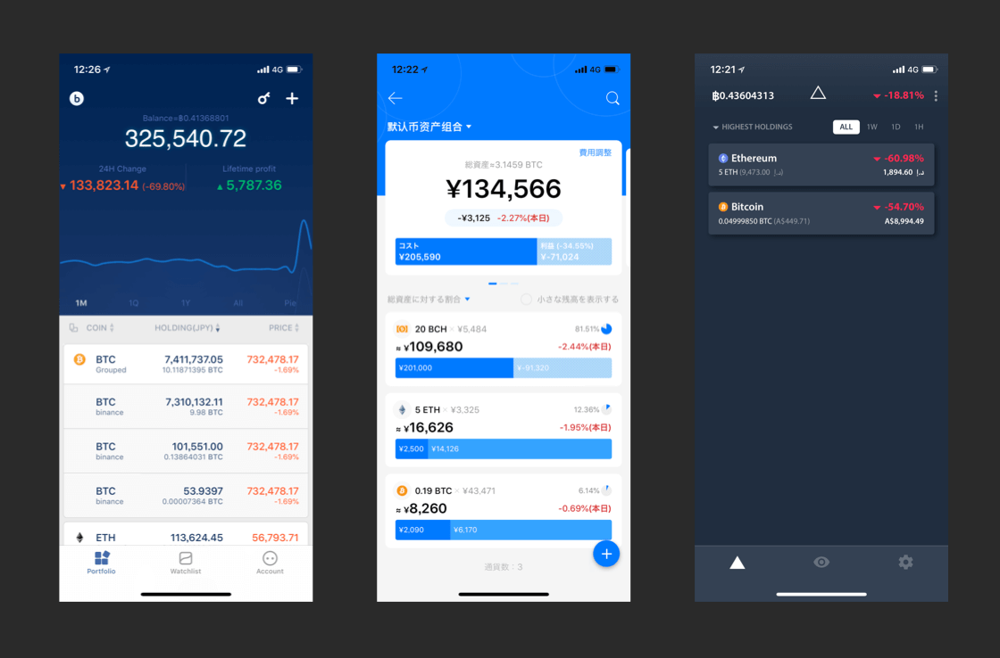
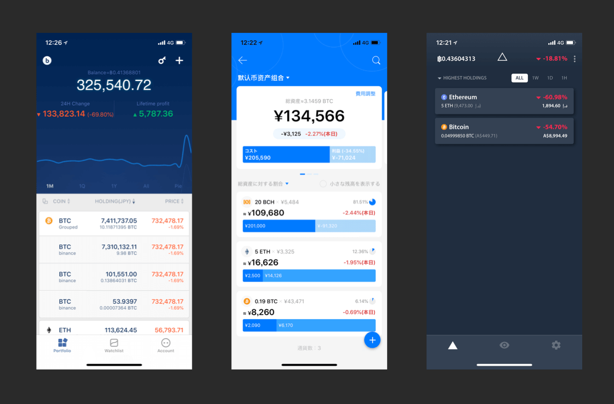
设计亮点
针对不同用户层的设计
为了弄明白第一个问题：“初级用户和深度用户分别需要什么样的功能？”。我通过前面描述的用户调研的结果，结合一些数据工具，例如 Google trend 以及 Ahrefs 等，来确定在 APP 的各个阶段分别需要加入哪些功能。
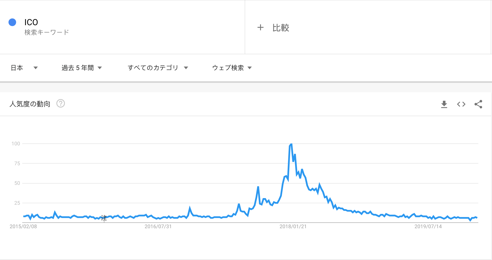例如，在2017年后半到2018年前半，“ICO”这个关键词的检索热度非常高，而且用户反馈中也提到了希望了解各大 ICO 进行的现状。于是我们将之前的一个项目 Coinjinja 的部分页面以 webview 的形式加入了 APP 中，并做了对应的移动端优化，方便用户进行查询和筛选的操作。当时 APP 中这个页面的浏览量达到了总数的20~30%之多。
但是随着2018年后半段，ICO 行业中出现太多虚假的项目，整体的评价开始下降，导致这个关键词开始不断失去热度。针对于这一点，我们开始不断地降低该页面的层级，从底部的标签栏中的关键位置，收纳到了二级页面中，最后彻底地从 APP 中移除。
通过一年多的多次用户调研以及持续的用户反馈搜集，最终我们将这些主要功能提供给了用户。

 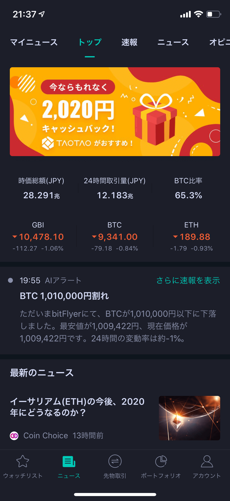
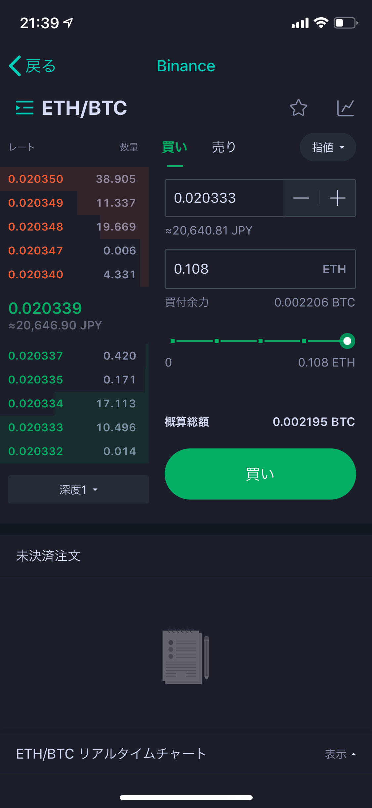
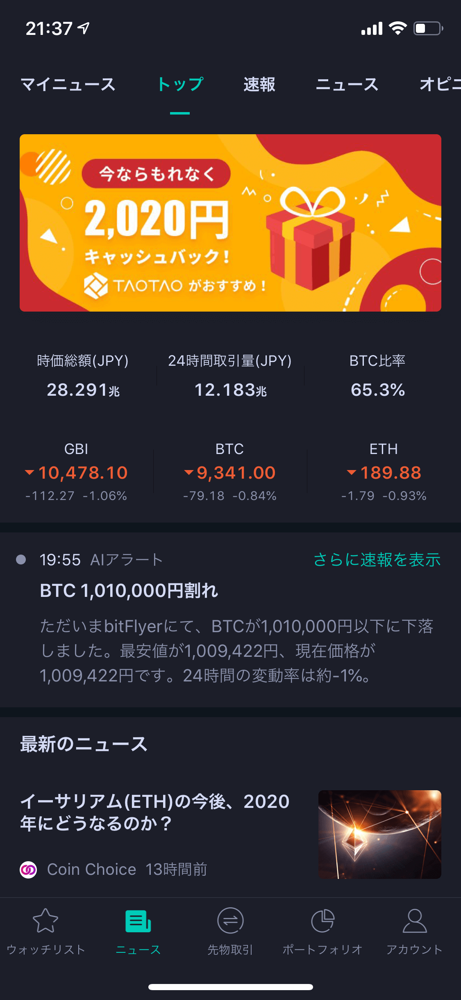
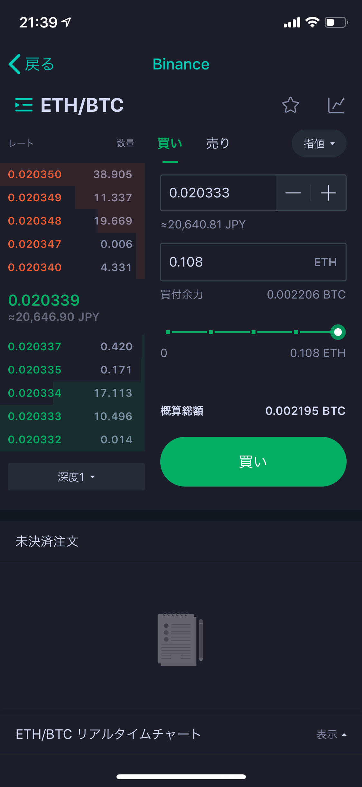
我们向初级用户提供了行情关注列表，市场总览，虚拟货币市场新闻以及 API 交易这4大功能。
我们向深度用户推出了虚拟货币资产管理以及虚拟货币期货交易2大功能。
强调用户体验的设计
虚拟货币对于当时的大多数人来说是一个很新潮的概念。向新手用户迅速地普及这些概念是一个亟待解决的问题。

为了回答这个问题，我调查了传统金融市场的各种 APP，从中汲取了可以适用到虚拟货币交易中的概念，并针对虚拟货币进行了适配，从而展现给用户一个较为熟悉的页面，同时又富有虚拟货币的特色。
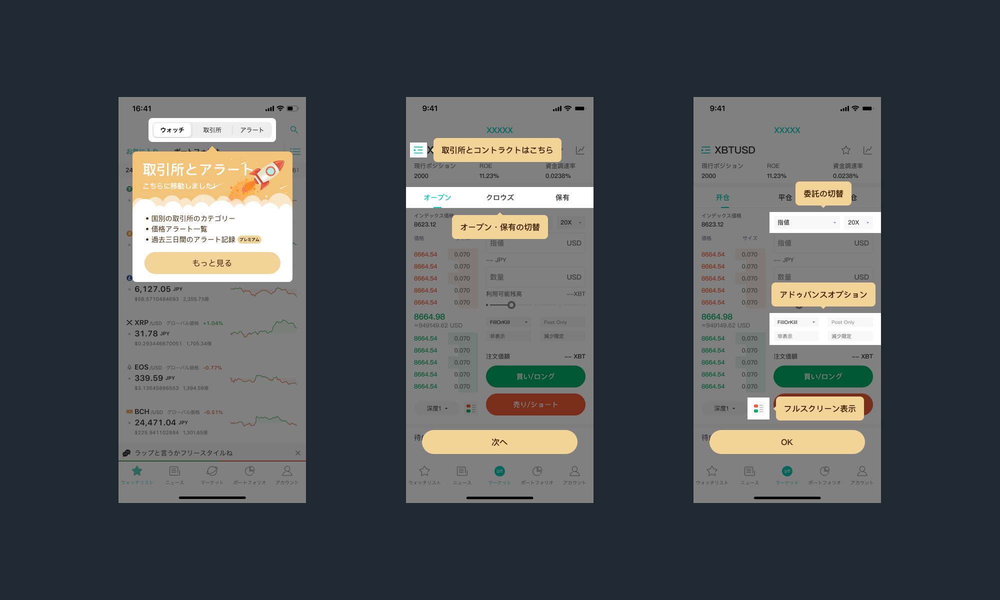同时，我整理了 APP 使用中的用户流程图，找到了各流程中的潜在问题点，通过一系列的用户指引，帮助用户更快地了解功能的使用方法，同时也增加了各功能的成功使用率。
促进产品成长的设计
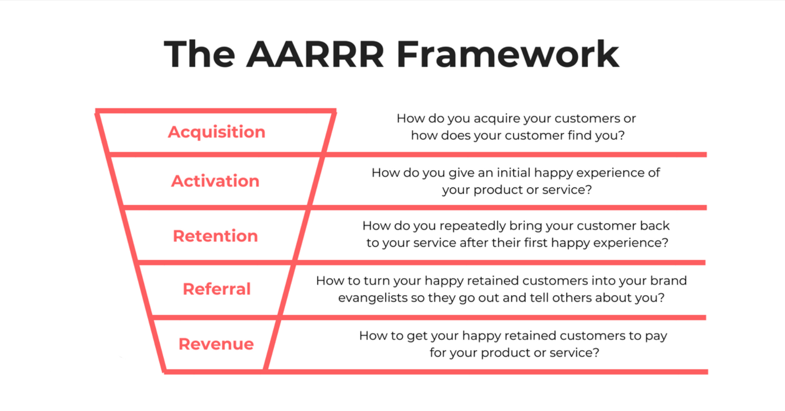为了回答“我们如何去不断地获取新用户？如何获得持续性的收益以不断地扩大我们的业务？”这个问题，我使用了 AARRR 这个模型作为我们的增长引擎。
下面用4个例子来从各方面展现这个模型的影响。
 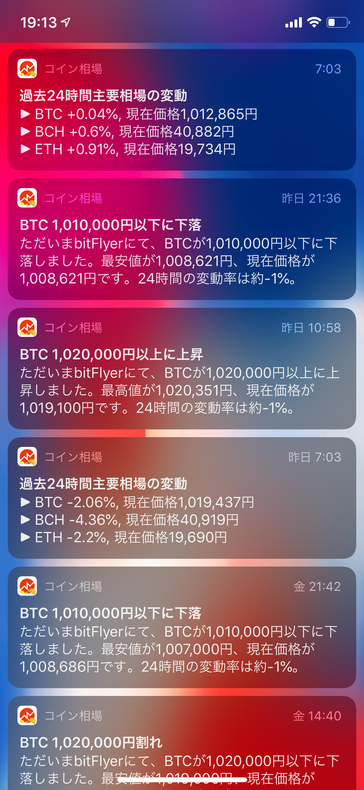
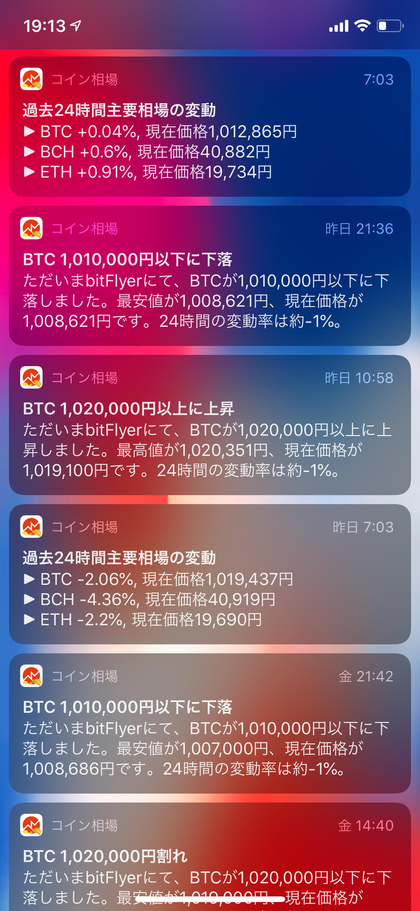

Referral & Acquisition: 为了改善用户的引荐以及降低获客成本，我设计了强化版的截图功能，当用户按下系统的截图键的时候，我们会自动帮助用户生成一个便于分享的截图页面。当用户将该截图分享出去的时候，他人可以通过截图底部的品牌信息了解我们的产品，以及通过二维码直接完成 APP 的加载并转化为我们的新用户。
Activation: 通过数据分析发现，我们有约60%的用户在完成 APP 下载之后就没有继续深入使用了，于是我和产品经理联合设计了 AI 提醒的功能，针对市场行情的变动以及发生巨大变化的主流货币进行推送提醒，这成功地帮助了我们转化了一部分用户成为常客，并且同时提高了 APP 留存率。
Retention: 为了进一步提高用户的留存率，有必要设计一些对于用户来说很重要同时迁移成本很高的功能，于是资产管理这样一个功能就上线了。它能自动同步各交易所的交易履历，同时可以自己追加一些交易细节，最后通过这些信息去分析用户的总资产变动情况以及资产构成，极大地帮助了用户管理虚拟货币的资产，同时降低了用户的流失率。
Revenue: 为了提升 APP 的盈利能力，我们在大部分功能都齐备的前提下，推出了会员项目。会员提供更多的推送提醒设置，期货交易等更高级的交易方式以及去除广告等功能，很好地促进了 APP 营收能力的提升。
设计的成果
 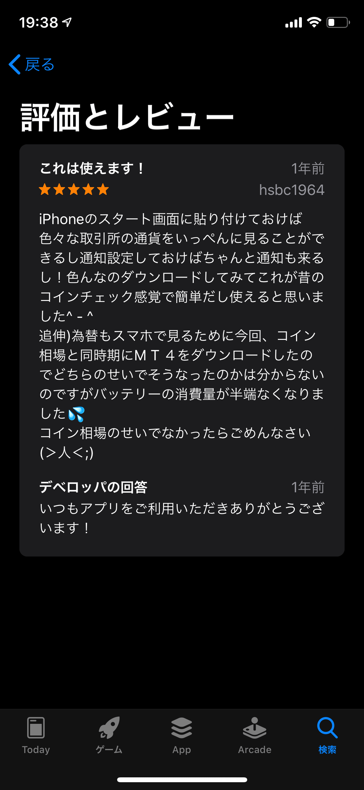
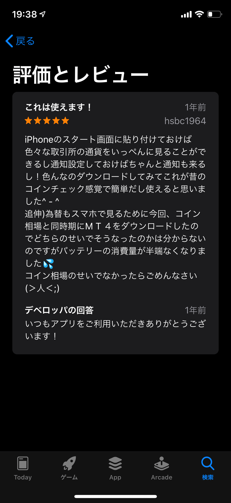

币观在全球已经获得了100万的用户下载（相对于虚拟货币市场的用户群体已经相当可观），成为了日本最大的第三方虚拟货币市场软件，同时在 APP Store 中获得了近万评价，评分达到了4.6星。
你可以访问币观的主页、或者通过下方的视频（注意音量）来了解我们。